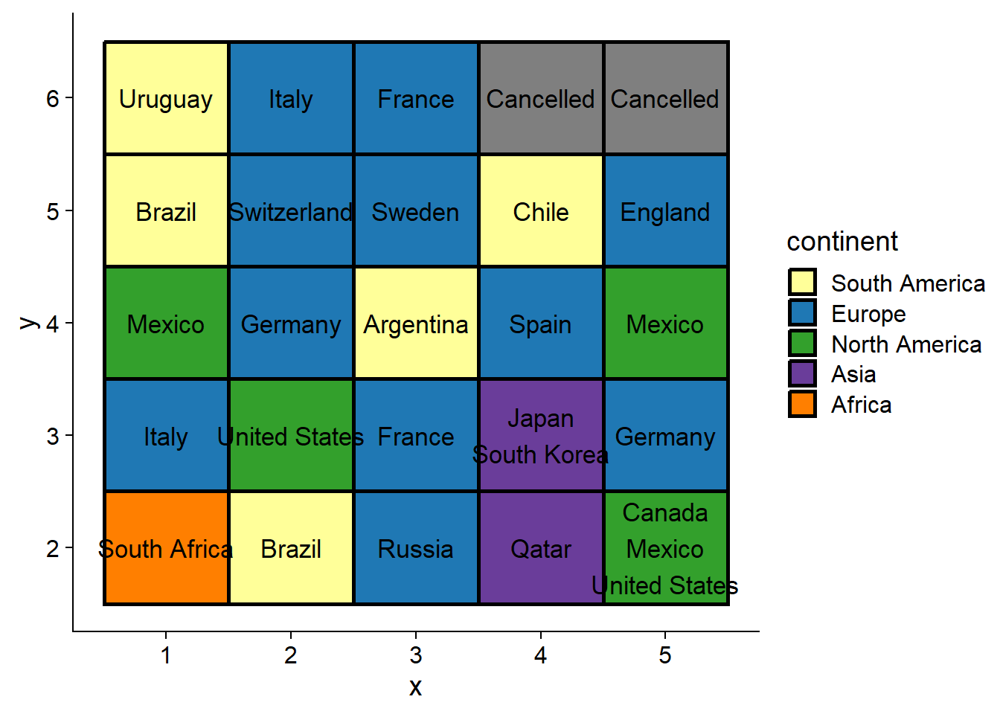
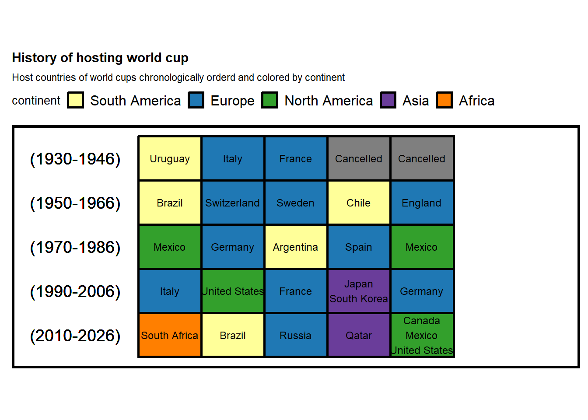
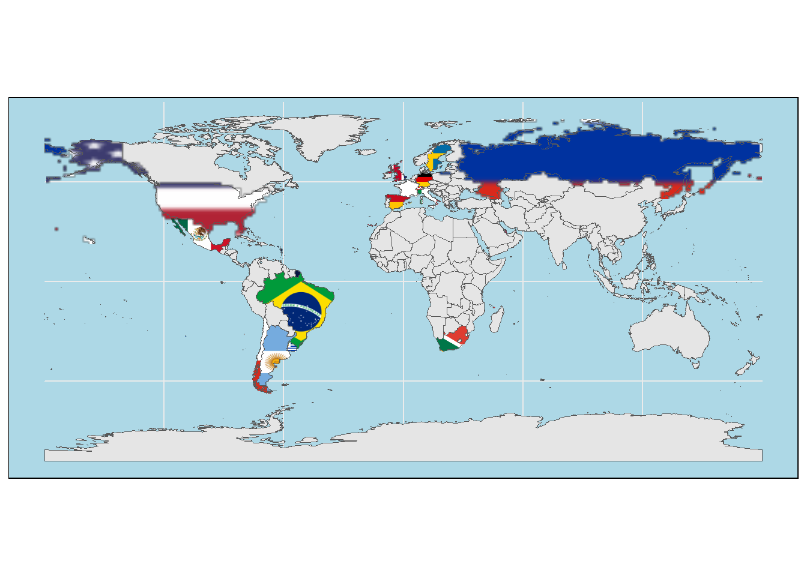

3.3 What is the timeline of world cup hosting?
d
df_tm <- df_host %>%
complete(year = full_seq(year, 4)) %>%
mutate(continent = ifelse(is.na(continent), "Cancelled", continent),
host_nation_s = ifelse(is.na(host_nation_s), "Cancelled", host_nation_s))
df_tm <- df_tm[1:30,] %>%
mutate(y = rep(6:1, each = 5),
x = rep(1:5, 6),
host_nation_s = case_when(
str_detect(host_nation_s, "Canada") ~ "Canada\nMexico\nUnited States",
str_detect(host_nation_s, "Japan") ~ "Japan\nSouth Korea",
TRUE ~ host_nation_s),
continent = factor(continent, levels = unique(continent))) %>%
filter(!is.na(continent))Let’s look at the timeline of hosting the world cup in the form of chronologically ordered tiles (AKA waffle plot)
df_tm %>%
ggplot(aes(x, y, fill = continent ))+
geom_tile(color = "black", size = 1)+
geom_text(aes(label = host_nation_s), size = 4.5)+
scale_color_manual(values = conti_cols)+
scale_fill_manual(values = conti_cols)## Warning: Using `size` aesthetic for lines was deprecated in ggplot2 3.4.0.
## ℹ Please use `linewidth` instead.
Looks good! Let’s add the year information and beautify the plot more
df_tm %>%
ggplot(aes(x, y, fill = continent ))+
geom_tile(color = "black", size = 1)+
geom_text(aes(label = host_nation_s), size = 3.1)+
geom_text(data = . %>%
group_by(y) %>%
mutate(range = glue::glue("({min(year)}-{max(year)})")) %>%
ungroup(),
aes(label = range),
x = -0.5,
size = 5)+
scale_x_discrete(expand = expansion(add = 2))+
guides(fill = guide_legend(nrow = 1))+
labs(title = "History of hosting world cup",
subtitle = "Host countries of world cups chronologically orderd and colored by continent")+
coord_fixed(0.7)+
scale_color_manual(values = conti_cols)+
scale_fill_manual(values = conti_cols)+
theme(title = element_text(size = 10),
axis.line = element_blank(),
axis.ticks = element_blank(),
axis.text = element_blank(),
axis.title = element_blank(),
legend.position = "top",
panel.border = element_rect(linewidth = 2,linetype = "solid", color = "black"))
Map
# For country names
world <- ne_countries(scale = "medium", returnclass = "sf")
wcp_hosts <- gisco_get_countries(country = unique(df_host$host_nation_s), epsg = 3857)## Warning in countrycode_convert(sourcevar = sourcevar, origin = origin, destination = dest, : Some values were not matched unambiguously: Canada Mexico United States, Japan South Korea## Warning in countrycode_convert(sourcevar = sourcevar, origin = origin, destination = dest, : Some strings were matched more than once, and therefore set to <NA> in the result: Canada Mexico United States,Canada,Mexico,United States; Japan South Korea,Japan,South Korea## Warning in gsc_helper_countrynames(unit, "eurostat"): Countries ommited: Japan
## South Korea,Canada Mexico United States . Review the names of switch to ISO3
## or Eurostat codes.## Warning in countrycode_convert(sourcevar = sourcevar, origin = origin, destination = dest, : Some values were not matched unambiguously: Canada Mexico United States, Japan South Korea## Warning in countrycode_convert(sourcevar = sourcevar, origin = origin, destination = dest, : Some strings were matched more than once, and therefore set to <NA> in the result: Canada Mexico United States,Canada,Mexico,United States; Japan South Korea,Japan,South Korea## Warning in gsc_helper_countrynames(country, "eurostat"): Countries ommited:
## Japan South Korea,Canada Mexico United States . Review the names of switch to
## ISO3 or Eurostat codes.# We paste the ISO2 code to each african country
wcp_hosts$iso2 <- countrycode(wcp_hosts$ISO3_CODE, "iso3c", "iso2c")
# Get flags from repo - low quality to speed up the code
flagrepo <- "https://raw.githubusercontent.com/hjnilsson/country-flags/master/png250px/"
# Base map of the world
plot <- ggplot(world) +
geom_sf(fill = "grey90") +
theme_minimal() +
theme(panel.background = element_rect(fill = "lightblue"))
# Loop and add
for (iso in wcp_hosts$iso2) {
# Download pic and plot
imgurl <- paste0(flagrepo, tolower(iso), ".png")
tmpfile <- tempfile(fileext = ".png")
download.file(imgurl, tmpfile, quiet = TRUE, mode = "wb")
# Raster
x <- wcp_hosts %>% filter(iso2 == iso)
x_rast <- rasterpic_img(x, tmpfile, crop = TRUE, mask = TRUE)
plot <- plot + layer_spatial(x_rast)
}
plot +
geom_sf(data = wcp_hosts, fill = NA)